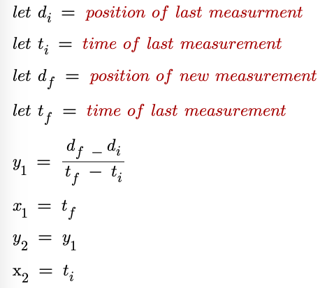

How it works
Every time a new measurement is added (excluding the first), this program
uses the following equation to determine two points to plot on the v vs t
graph.

Source code can be found here.
| Time | Position |
|---|---|